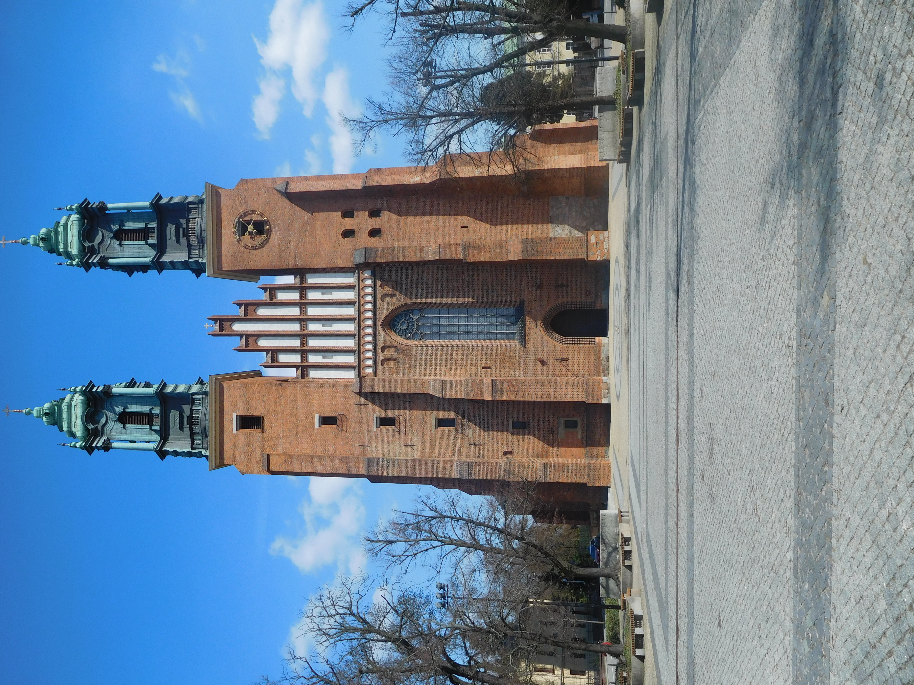
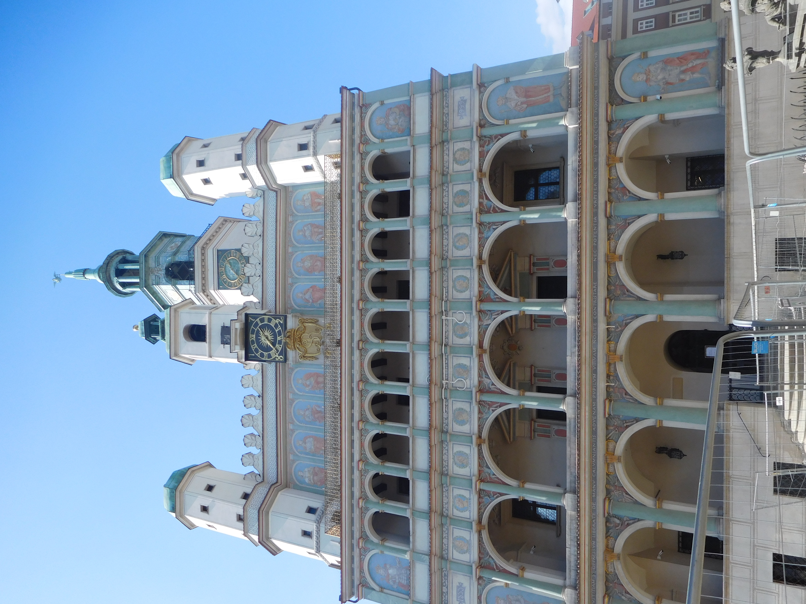
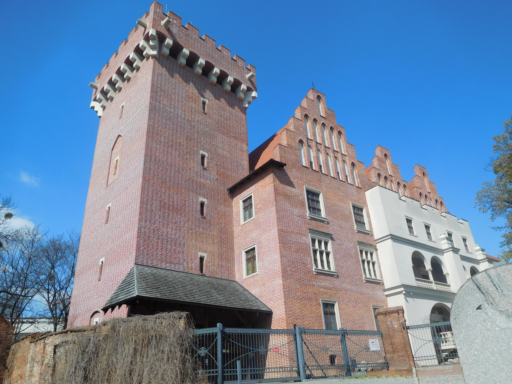
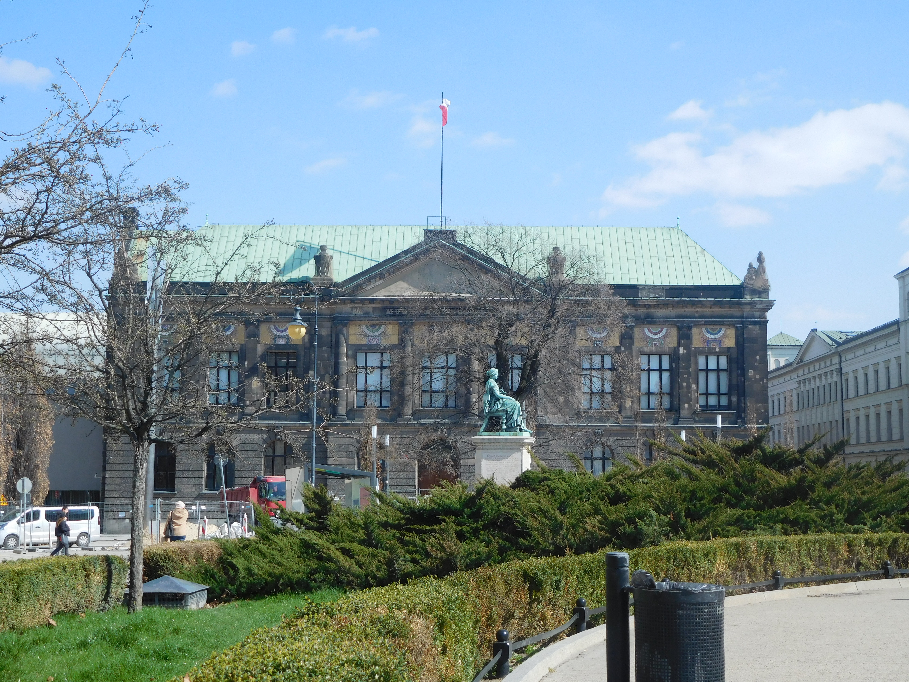
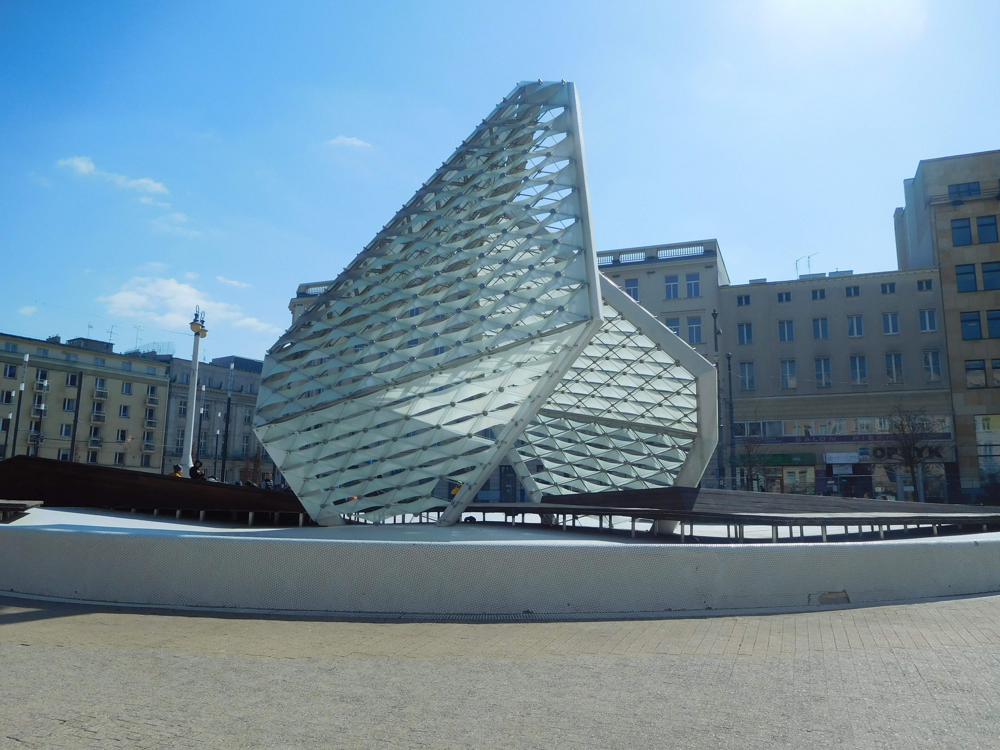
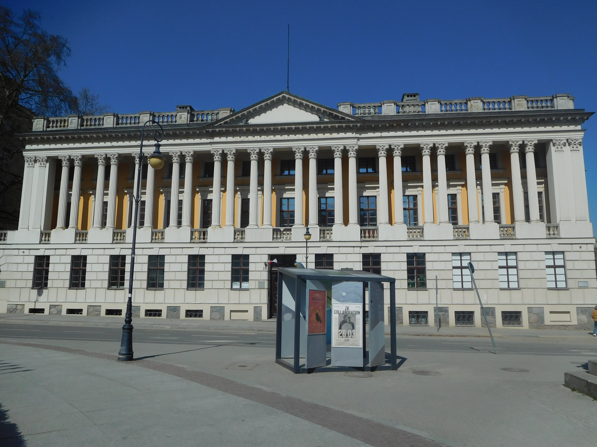
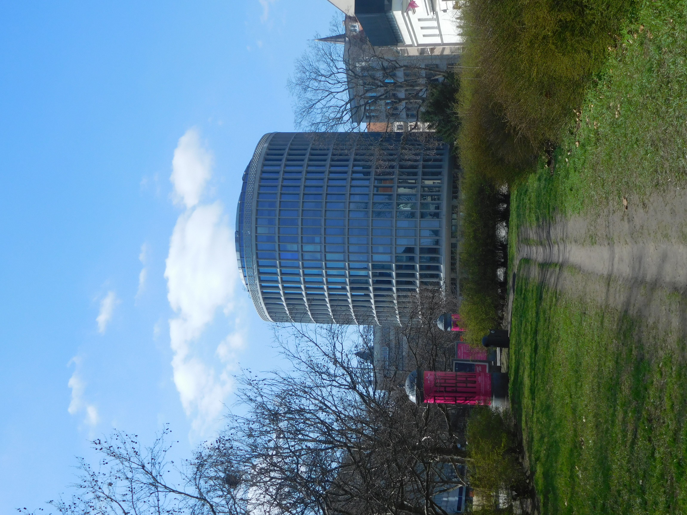
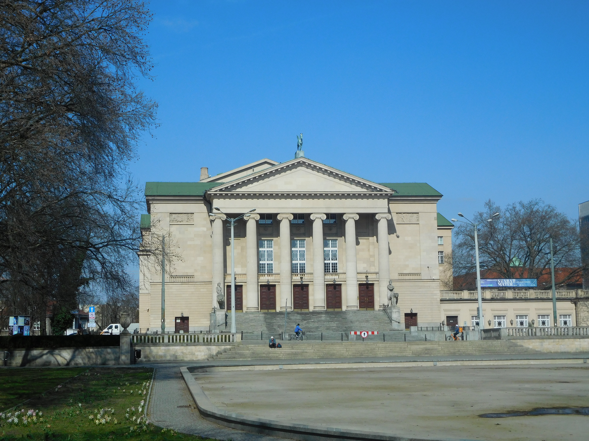
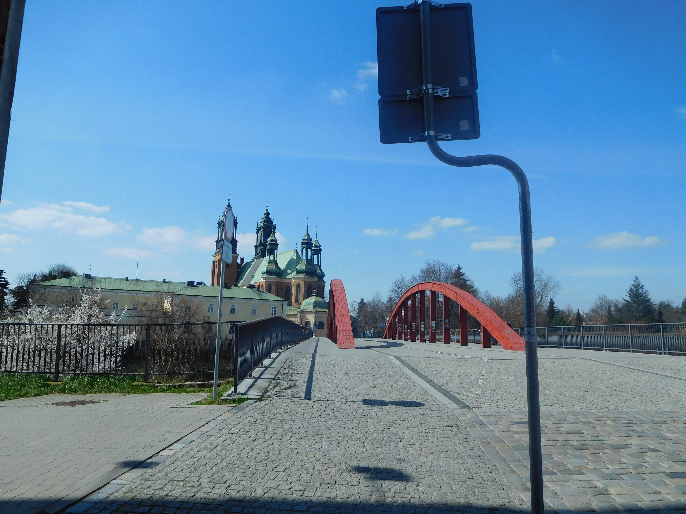

Katedra Poznańska pod wezwaniem Apostołów Piotra i Pawła mieści się na wyspie Ostrów Tumski. Siedziba pierwszego biskupa Polski oraz przypuszczalne miejsce chrztu Mieszka I jak i pochówku pierwszych władców polski. , Została odbudowana po pożarze, który miał miejsce podczas II WS, i zniszczył ją w 65%.
Najstarsze wzmianki o ratuszu pochodzą z 1310 roku. Był licznie odbudowywany ze względu na liczne kataklizmy jakie go dotykały. Słynne koziołki zamontowane nad tarczą zegarową miały swój początek w XVI wieku, podczas remontu ratusza. Przetrwały pomimo wielu katastrof i ponownie zostały zamontowane po II WŚ. Działają do dnia dzisiejszego i trykają się codziennie o 12 godzinie.
Wzgórze Przemysła, dawna rezydencja króla Przemysła II, która została ulokowana na wzniesieniu nie bez powodu, ponieważ XIII wiek był to okres, kiedy tworzono założenia nowego miasta, przeniesionego tutaj z Ostrowa Tumskiego. Nieistniejący już zamek postawiony na szczycie wzgórza został wcielony do umocnień fortyfikacyjnych a później rozbudowany przez Kazimierza III Wielkiego. Został odbudowany w 2010-2013 roku i udostępniony do zwiedzania.
Muzeum Narodowe w Poznaniu ma już ponad 150 lat. Należy do jednych z najstarszych i największych muzeów w Polsce. W 2013 rozszerzono placówkę i otwarto nowoczesny budynek. Łącznie muzeum gromadzi około 300 tysięcy obiektów muzealnych.
Plac wolności, symbolicznie miejsce wielu historycznych wydarzeń takich jak przysięga polskich żołnierzy podczas Powstania Wlkp. Teren na którym znajduje się plac wolności miał być już zagospodarowany pod koniec XVIII wieku jednak II rozbiór polski uniemożliwił takie działanie. W 1994 roku odbył się konkurs architektoniczny, gdzie zaproponowano rozwiązania jakie znamy z dnia dzisiejszego
Biblioteka Raczyńskich w Poznaniu, założona w 1829 roku przez Edwarda Raczyńskiego, którego zbiór ksiąg stał się podstawą do utworzenia bibliotek. Obecnie w budynku mieści się dyrekcja, specjalny księgozbiór oraz wystawy tymczasowe. Na cześć fundatora Edwarda Raczyńskiego przed budynkiem znajduje się pomnik wraz z jego krótkim życiorysem i osiągnięciami.
Okrąglak zbudowany w latach powojennych na podstawie projektu Marka Leykama. Przez ponad 50 lat pełnił funkcję domu towarowego. W dniu obecnym okrąglak pełni rolę biurową-usługową oraz jest już ikonicznym symbolem Poznania, bez którego ciężko sobie wyobrazić panoramę Poznania.
Teatr Wielki w Poznaniu jest symbolem życia kulturalnego i sceny operowej na skalę krajową. Działa aktywnie od 100 lat i może pochwalić się wieloma nagrodami przyznanymi za fenomenalne spektakle oraz utalentowaną kadrą. Owa placówka stara się również popularyzować scenę operową dla najmłodszych przez przystępne dla nich materiały.
Most Biskupa Jordana w Poznaniu nie jest pierwszym rozwiązaniem połączenia Ostrowa Tumskiego i Śródki, gdyż most nad Cybiną istniał w tym miejscu już za czasów Mieszka I. Na moście oprócz pięknych widoków można również podziwiać kłódki przyczepione do barierek, które należą do zakochanych par. Most upamiętnia pierwszego polskiego biskupa, który miał swoja siedzibę w Poznaniu.
